Параметры
Цель:
Ваша цель:
Цель
Критерии:
Критерии не добавлены
Добавить критерий
Удалить все критерии
Альтернативы:
Альтернативы не добавлены
Добавить альтернативу
Удалить все альтернативы
Критерии
Задайте критерии, чтобы перейти к сравнениям
Альтернативы
Задайте альтернативы, чтобы перейти к сравнениям
Итог
Проведите все сравнения. Здесь будет получен итог.
Справка
Ниже представлена основная информация по использованию сайта
Описание
Данный сайт (диалоговая система) предназначена для поиска наилучшей альтернативы среди заданного множества альтернатив относительно некоторых критериев.
Критерии и альтернативы задаются самим пользователем. В итоге, пользователь получает рекомендацию в виде списка альтернатив, которые упорядочены с точки зрения возможной предпочтительности выбора для пользователя. Это значит, что система "рекомендует", что самая первая альтернатива в полученном списке будет наиболее подходящей пользователю, вторая, менее подходящей, чем первая, и т.д.
Также предусмотрен автоматический пересчет итогового вектора при передвижении "ползунков" сравнения.
Пользователь имеет возможность получить дополнительно более расширенную рекомендацию, если его не устраивает первый ответ по каким-либо причинам. Расширенная рекомендация дает несколько вариантов упорядочиваний с числовым значением, выражаемым в процентном соотношении от вероятного количества исходов. Данное число показывает, насколько конкретное упорядочивание альтернатив возможно подойдет пользователю.
Ответы, полученные в результате работы программы, носят исключительно рекомендательный характер.
Критерии и альтернативы задаются самим пользователем. В итоге, пользователь получает рекомендацию в виде списка альтернатив, которые упорядочены с точки зрения возможной предпочтительности выбора для пользователя. Это значит, что система "рекомендует", что самая первая альтернатива в полученном списке будет наиболее подходящей пользователю, вторая, менее подходящей, чем первая, и т.д.
Также предусмотрен автоматический пересчет итогового вектора при передвижении "ползунков" сравнения.
Пользователь имеет возможность получить дополнительно более расширенную рекомендацию, если его не устраивает первый ответ по каким-либо причинам. Расширенная рекомендация дает несколько вариантов упорядочиваний с числовым значением, выражаемым в процентном соотношении от вероятного количества исходов. Данное число показывает, насколько конкретное упорядочивание альтернатив возможно подойдет пользователю.
Ответы, полученные в результате работы программы, носят исключительно рекомендательный характер.
Навигационная панель
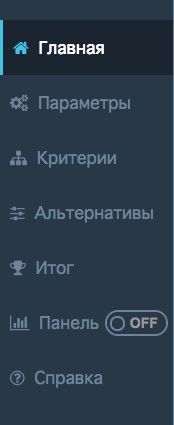
Навигационная панель предназначена для навигации по сайту. Основные элементы навигации и страницы:
- Главная: на главной странице отображено название диалогового комплекса, контакты автора и кнопка "Начать", позволяющая начать работу с программой.
- Параметры: на данной странице задается цель, которую преследует пользователь, альтернативы и критерии, относительно которых пользователь хочет упорядочить альтернативы.
- Критерии: сравнение критериев друг с другом.
- Альтернативы: сравнение альтернатив друг с другом относительно каждого из критериев.
- Итог: здесь пользователь получает итоговое упорядочивание альтернатив, а так же имеет возможность получить дополнительную рекомендацию.
- Панель: блок в навигации, который имеем "ползунок", позволяющий включить или выключить дополнительно панель с отображением итогового результата (упорядоченных альтернатив).
- Справка: страница с описание работы программы и советами.
Активный элемент навигационной панели имеет полоску слева, белый текст и более темный фон по сравнению с остальными элементами.
- Главная: на главной странице отображено название диалогового комплекса, контакты автора и кнопка "Начать", позволяющая начать работу с программой.
- Параметры: на данной странице задается цель, которую преследует пользователь, альтернативы и критерии, относительно которых пользователь хочет упорядочить альтернативы.
- Критерии: сравнение критериев друг с другом.
- Альтернативы: сравнение альтернатив друг с другом относительно каждого из критериев.
- Итог: здесь пользователь получает итоговое упорядочивание альтернатив, а так же имеет возможность получить дополнительную рекомендацию.
- Панель: блок в навигации, который имеем "ползунок", позволяющий включить или выключить дополнительно панель с отображением итогового результата (упорядоченных альтернатив).
- Справка: страница с описание работы программы и советами.
Активный элемент навигационной панели имеет полоску слева, белый текст и более темный фон по сравнению с остальными элементами.
Главная страница
Главная страница содержит название программного комплекса, контакты автора-разработчика и кнопку 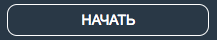, при нажатии на которую, пользователь переходит на страницу "Параметры".
Параметры
Страница "Параметры" содержит такие элементы, как "Цель", "Критерии", "Альтернативы", элементы навигации.
Вы можете задать или изменить цель, нажав на 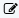. При этом появляются следующие элементы: поле ввода 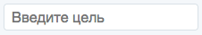 ("Редактировать"), в которое необходимо ввести свою цель. Чтобы сохранить введенную в поле ввода цель, необходимо нажать 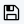 ("Сохранить"). При этом поле ввода исчезнет и вы увидите введенную раннее цель. При отображении поля ввода, чтобы отменить/вернуть прошлую цель (если не нажали на кнопку "Сохранить"), необходимо нажать 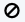 ("Отмена"). При этом поле ввода исчезнет и вы увидите последнюю сохраненную цель.
кнопки 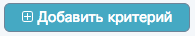, 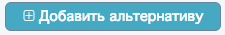 ("Добавить") позволяют добавить критерий или альтернативу, которые появляются в зоне Критериев/Альтернатив с порядковым названием "Критерий i"/"Альтернатива i". Каждый такой элемент имеет кнопку 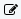 ("Редактирование"). При нажатии на кнопку "Редактирование" появляется поле ввода 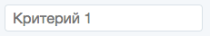, в которое можно ввести наименование критерия или альтернативы. Данный элемент (критерий/альтернатива) можно удалить, используя кнопку 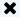 ("Удалить"). Также после введения наименования элемента в поле ввода, введенный текст можно сохранить, используя 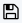 ("Сохранить"), или же отменить введенный текст или вернуть прошлое наименование (до нажатия на "Сохранить"), нажав на 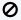. Все Критерии/Альтернативы можно удалить, используя 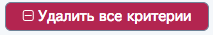, 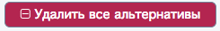 ("Удалить все").
Цель
Цель говорит о вашей цели выбора наилучшего варианта, например, "Купить автомобиль", "Выбрать удобный транспорт" и т.д.Вы можете задать или изменить цель, нажав на 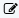. При этом появляются следующие элементы: поле ввода 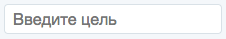 ("Редактировать"), в которое необходимо ввести свою цель. Чтобы сохранить введенную в поле ввода цель, необходимо нажать 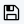 ("Сохранить"). При этом поле ввода исчезнет и вы увидите введенную раннее цель. При отображении поля ввода, чтобы отменить/вернуть прошлую цель (если не нажали на кнопку "Сохранить"), необходимо нажать 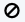 ("Отмена"). При этом поле ввода исчезнет и вы увидите последнюю сохраненную цель.
Критерии и альтернативы
В данных блоках пользователь предлагается задать альтернативы, которые необходимо упорядочить согласно некоторым критериям. Критерии и альтернативы имеют схожую функциональную часть, которая состоит из следующих элементов:кнопки 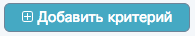, 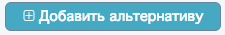 ("Добавить") позволяют добавить критерий или альтернативу, которые появляются в зоне Критериев/Альтернатив с порядковым названием "Критерий i"/"Альтернатива i". Каждый такой элемент имеет кнопку 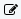 ("Редактирование"). При нажатии на кнопку "Редактирование" появляется поле ввода 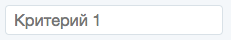, в которое можно ввести наименование критерия или альтернативы. Данный элемент (критерий/альтернатива) можно удалить, используя кнопку 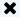 ("Удалить"). Также после введения наименования элемента в поле ввода, введенный текст можно сохранить, используя 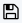 ("Сохранить"), или же отменить введенный текст или вернуть прошлое наименование (до нажатия на "Сохранить"), нажав на 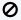. Все Критерии/Альтернативы можно удалить, используя 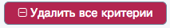, 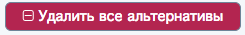 ("Удалить все").
Заметка
Введенные цель, критерии и альтернативы сохраняются до очистки кэша в браузере. После перезагрузки страницы появляется снова главная страница, однако все введенные элементы сохраняются.Элементы навигации
Также можно вернуться на главную страницу или перейти к сравнению критериев с помощью соответствующих кнопок.Заметка
Для перехода к сравнению критериев необходимо задать минимум один критерий и минимум две альтернативы.Критерии
При задании только одного критерия будет показано сообщение об этом и предложено перейти к сравнению альтернатив.
При использовании более одного критерия, будут отображен список всех критериев и предложено попарно сравнить все критерии.
Когда проведены сравнения всех пар критериев, предлагается перейти к сравнению альтернатив.
При использовании более одного критерия, будут отображен список всех критериев и предложено попарно сравнить все критерии.
Сравнение
Для сравнения критериев (и так же альтернатив) используется "ползунок", который изначально находится в положении середины ("Неважно"). Для сравнения необходимо передвинуть ползунок в какую-либо из сторон настолько, насколько вы считаете первый из критериев для вас более важнее, чем второй. При этом "важность" оценивается интуитивно и индивидуально. Например, если "Критерий 1" для вас намного лучше (важнее), чем "Критерий 2", то ползунок стоит передвинуть ближе к правому краю, если намного хуже, то ближе к левому краю, и если они примерно равноценны с точки зрения предпочтительности выбора, то примерно в районе середины ("Неважно").Когда проведены сравнения всех пар критериев, предлагается перейти к сравнению альтернатив.
Альтернативы
Сравнение альтернатив производится относительно каждого из критериев. Поэтому необходимо провести сравнения, используя тот же самый принцип (и такую же шкалу), как и при сравнении критериев.
Далее, после сравнения всех альтернатив относительно всех критериев, необходимо перейти к Итогу.
Далее, после сравнения всех альтернатив относительно всех критериев, необходимо перейти к Итогу.
Важная заметка
До получения Итога необходимо пользоваться исключительно кнопками навигации (по две на каждой странице). После получения итогового ранжирования можно использовать вкладки из навигационной панели слева.Итог
После задания и сравнения критериев и альтернатив, во вкладке Итог отображаются:
цель, список критериев, список альтернатив и итоговый вектор альтернатив, упорядоченных с точки зрения предпочтительности выбора.
Также пользователь может получить дополнительную рекомендацию, нажав на кнопку "Дополнительная рекомендация".
Дополнительная рекомендация предлагает несколько вариантов, которые могли бы более подойти пользователю. Дополнительные варианты отображаются в виде диаграммы, высота столбцов показывает степень возможной предпочтительности выбора определенного упорядочивания.
цель, список критериев, список альтернатив и итоговый вектор альтернатив, упорядоченных с точки зрения предпочтительности выбора.
Также пользователь может получить дополнительную рекомендацию, нажав на кнопку "Дополнительная рекомендация".
Дополнительная рекомендация предлагает несколько вариантов, которые могли бы более подойти пользователю. Дополнительные варианты отображаются в виде диаграммы, высота столбцов показывает степень возможной предпочтительности выбора определенного упорядочивания.
Заметка
При наведении на каждый столбец показывается вся информация. Это может быть важно в том случае, если вариантов упорядочивания слишком много и они отображаются некорректно.Важная заметка
Рекомендуется перезагружать страницу время от времени, чтобы не хранить лишнюю информацию в браузере. При перезагрузке заданные цель, критерии, альтернативы сохраняются, а все сравнения сбрасываются на средние значения.Панель
После получения итогового решения можно включить панель, которая отобразит итоговое ранжирование внизу страницы. Это бывает полезно при изменении сравнений критериев или альтернатив, так как итоговое упорядочивание в этом случае пересчитывается автоматически при передвижении "ползунков".
Соглашение
Пользуясь данным сайтом, вы соглашаетесь с исключительными правами автора на сайт, обязуетесь использовать его исключительно в личным целях, а так же не использовать (копировать, изменять, хранить, распространять информацию) сайт и его элементы в коммерческих целях. Также соглашаетесь с тем, что автор не несет никакой ответственности за убытки (моральные и материальные) в результате пользования сайтом.